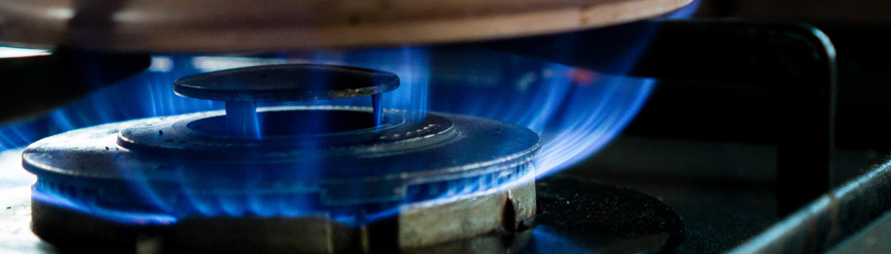

home > 사업소개 > 도시가스
도시가스
도시가스는 가정에서 산업용, 발전용에 이르기까지 광범위하게 사용되고 있습니다
가스전에서 채취한 천연가스를 영하 162도로 냉각시켜 액화천연가스 상태로 공급하는 것을 말합니다.

개요 및 원리
-
- 01.깨끗한 에너지
- 도시가스는 액화과정에서 분진(Dust), 황(SOx), 질소(NOx) 등이 제거되어 연소시 공해물질을 거의 발생하지 않는 무공해 청정연료로서 환경오염이 없는 최고의 에너지입니다.
-
- 02.안전한 에너지
- 도시가스는 공기보다 가벼워 누출되어도 쉽게 날아가며 발화온도가 높아 폭발의 위험이 적은 안전한 에너지입니다.
-
- 03.미래 에너지
- 전세계적으로 매장량이 풍부한 도시가스는 가채연수가 석유보다 길어 석유대체 에너지로 각광받는 에너지입니다.
-
- 04.경제적인 에너지
- 도시가스는 타연료에 비해 열효율이 높고, 자동차, 유리, 전자, 섬유, 식품, 금속, 열처리 등의 다양한 사업분야에 사용되어 품질향상, 환경문제를 해결해주는 경제적인 에너지입니다.
-
- 05.편리한 에너지
- 도시가스는 지하에 매설된 배관으로 공급되므로 별도의 수송수단이나 저장시설이 필요없고 공간 활용성이 높으며, 쓰레기 및 이물질 배출이 없어 사용이 편리한 에너지입니다.
공급현황
전국에 있는 도시가스 회사 중
가장 높은 점유율을 가지고 있습니다.
* 출처 : 한국도시가스 협회 2022년 도시가스사업 현황
| 회사 | 삼천리 | 서울 | 코원 | 에스코 | 대륜 | 인천 | 귀뚜라미 | 기타 | 전국계 |
|---|---|---|---|---|---|---|---|---|---|
| 판매열량(백만MJ) | 164,480 | 84,964 | 67,213 | 56,247 | 39,420 | 34,294 | 14,398 | 543,203 | 1,004,217 |
| 점유율(%) | 16.4% | 8.5% | 6.7% | 5.6% | 3.9% | 3.4% | 1.4% | 54.1% | 100% |
필요성
국가적 측면에서의 국가 경쟁력 강화에 도움이 됩니다.
-
가스산업
가스요금 인하효과
· 계절별 수요 격차 완화 및 안정적인 수급 확보
-
전력산업
전기요금 인하효과
· 전력수급 불안 해소 및 발전소 건설 비용 절감
-
환경
지구환경 보전기여
· 이산화탄소 배출 감소 및 프레온 냉매 감소